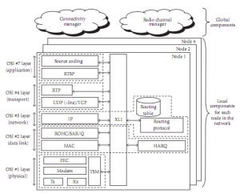

Thales Group researchers Raphaël Massin and his colleagues developed an OMNeT++-based simulation framework to enable the study of data and multimedia content transmission over hybrid wired/wireless ad-hoc networks, as well as the design of innovative radio access schemes. To achieve this goal, the complete protocol stack from the application to the physical layer is simulated, and the real bits and bytes of the messages transferred on the radio channel are exchanged. To ensure that this framework was reusable and extensible in future studies and projects, a modular software and protocol architecture was defined, using facilities provided by OMNeT++. The work has already provided valuable results concerning cross-layer HARQ/MAC protocol performance and video transmission over the wireless channel.
R. Massin, C. Lamy-Bergot, C. J. Le Martret, and R. Fracchia (Thales Communications), 2010. "OMNeT++-Based Cross-Layer Simulator for Content Transmission over Wireless Ad Hoc Networks." EURASIP Journal on Wireless Communications and Networking, vol. 2010, Article ID 502549. doi:10.1155/2010/502549
{% include next_casestudy_links.html %}